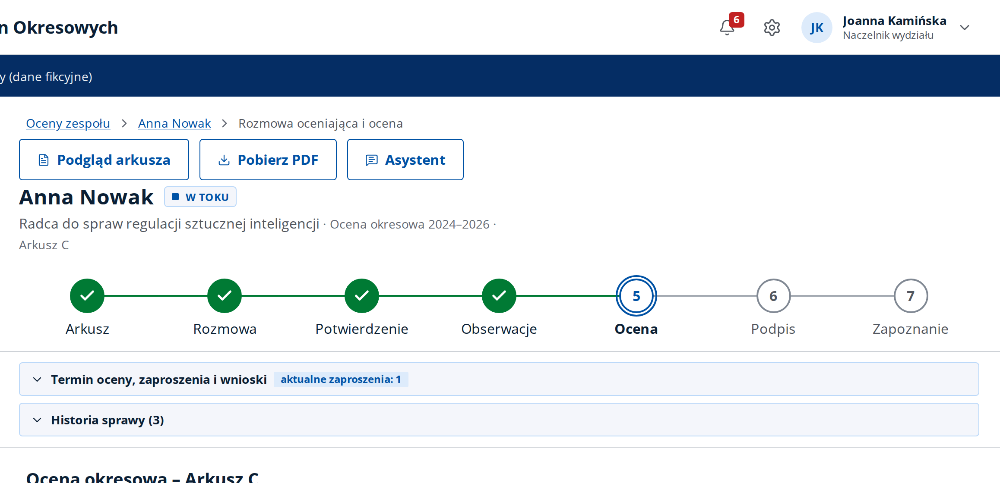
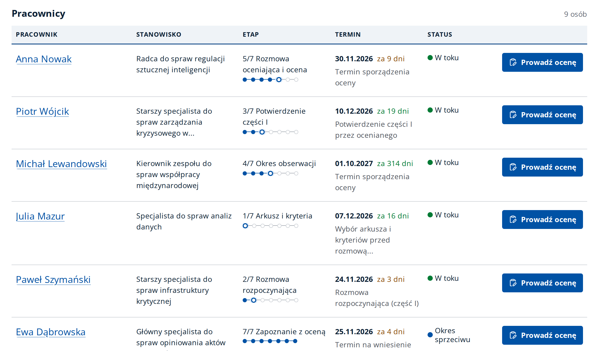
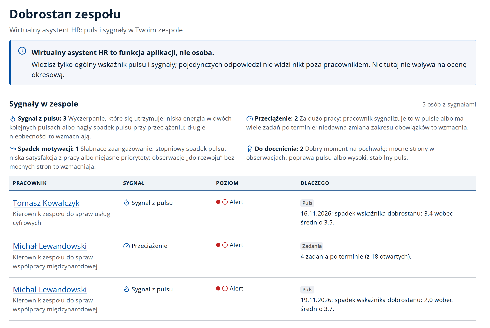
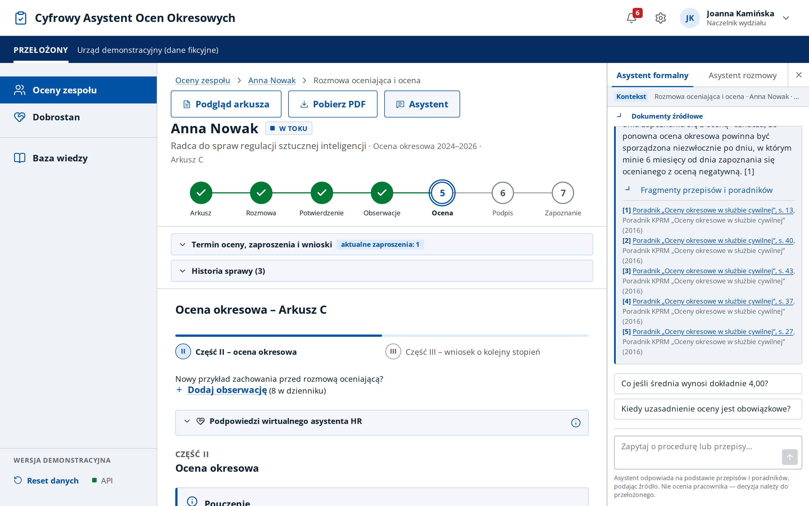

HackNation 2026 · wyzwanie KPRM, Departament Służby Cywilnej
Prowadzi przełożonego, ocenianego i kadry przez całą ocenę okresową w służbie cywilnej: od arkusza i kryteriów po zapoznanie i sprzeciw. Terminy liczy sam, a AI tylko podpowiada.
Osoby i dane w prezentacji są fikcyjne (dane demonstracyjne). Bez godła i oficjalnych znaków.
1Problem
Ocena okresowa co 24 miesiące to obowiązek z ustawy o służbie cywilnej. Dziś to głównie formularz do wypełnienia, a nie rozmowa o rozwoju.
Rozwiązanie
Każdy krok z rozporządzenia jako etap. System proponuje arkusz A, B lub C i kryteria, zbiera obserwacje z całego okresu i prowadzi do podpisu.

Dalej: sprzeciw i decyzja
Każda rola ma swój widok
Zgodność z prawem i automatyzacja
Reguły z ustawy o służbie cywilnej i rozporządzenia PRM z 2016 r. Każda ma paragraf i test. Przypomnienia wysyłają się same.

Wirtualny asystent HR
Dobrowolny puls co 14 dni pokazuje przeciążenie i ryzyko wypalenia, zawsze z odpowiedzią „dlaczego”. Podpowiada rozmowę, informację zwrotną i formy rozwoju do IPRZ.

Asystent AI
Odpowiedzi tylko z bazy wiedzy: ustawy, rozporządzeń, poradników KPRM i wzorów arkuszy, z linkiem do strony. Gdy czegoś tam nie ma, mówi „nie znalazłem”.

Fragment przepisu lub poradnika z numerem strony; otwiera się jednym kliknięciem.
Imiona i nazwiska, komórki, PESEL, e-maile i telefony są pseudonimizowane, zanim cokolwiek trafi do modelu.
Dowolny endpoint zgodny z OpenAI, np. lokalna Ollama. Bez modelu działa wyszukiwanie lokalne (BM25).
Nie ocenia pracownika. Decyzja zawsze należy do przełożonego.
Wdrożenie
Open source (EUPL-1.2), bez płatnych licencji. Cała aplikacja startuje jednym poleceniem i działa bez internetu.
React + Vite, wygląd gov.pl, WCAG, tryb ciemny i wysoki kontrast
NestJS; reguły prawne w jednym miejscu; OpenAPI 3
migracje przy starcie; bez bazy: tryb w pamięci
opcjonalny, lokalny (Ollama) lub zgodny z OpenAI
opcjonalna kopia powiadomień
eksport JSON arkusza przez API
docker compose up · Linux, Windows, macOS
Każda reguła to czysta funkcja z testem i paragrafem: termin, arkusz, adresat sprzeciwu.
Kadry zakładają konto pracownikowi z kartoteki; import CSV, docelowo LDAP/AD.
Wypróbuj
j.kaminskaprzełożona: zespół, oceny, dobrostana.nowakoceniana: moje oceny, pulse.dabrowskaoceniana w okresie sprzeciwua.liskadry: monitoring, kartoteka, statystykib.wisniewskadyrektor generalny: sprzeciwyadminadministrator: konta, tryb korektyHasło kont demonstracyjnych: w README repozytorium.
Co dalej
Open source, licencja EUPL-1.2 · dane demonstracyjne są fikcyjne
8